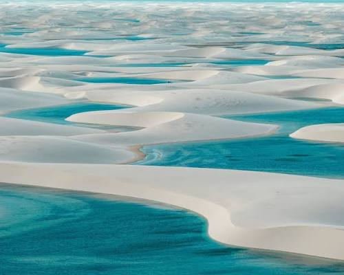
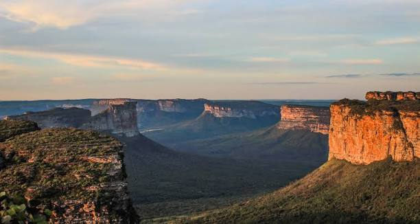
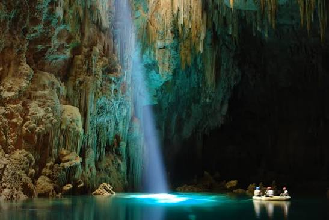

Fernando de Noronha
Praias premiadas e mergulho com tartarugas. Melhor época: agosto a dezembro.
Praias premiadas e mergulho com tartarugas. Melhor época: agosto a dezembro.

Dunas brancas com lagoas azuis. Melhor época: junho a setembro.

Trilhas, cavernas e cachoeiras. Melhor época: maio a setembro.

Rios transparentes e grutas. Dá para visitar o ano todo.
Fale com a gente e receba um roteiro sugerido.
Pedir meu roteiro